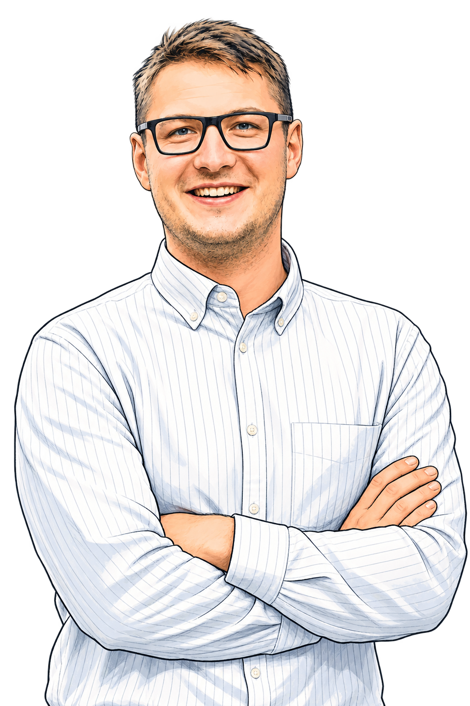
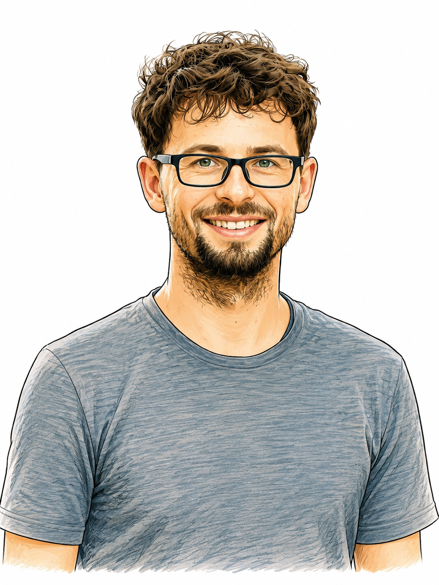
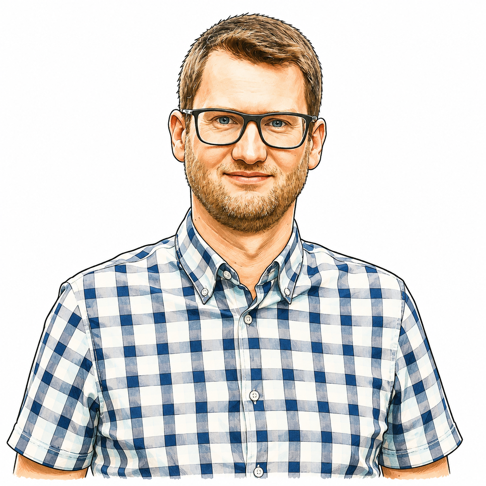
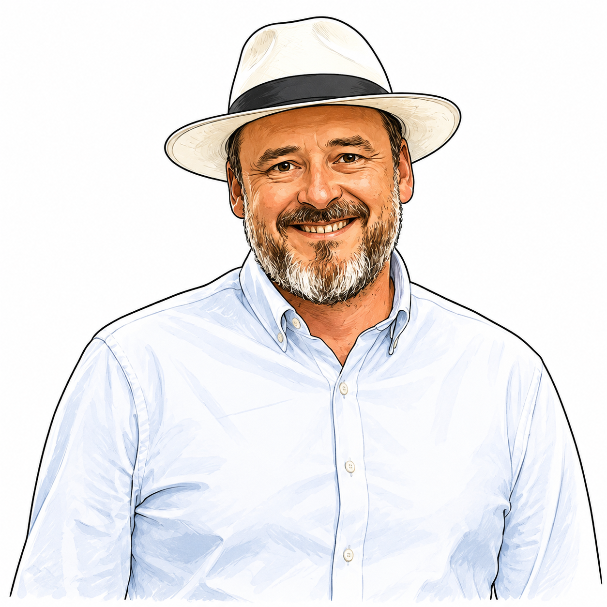
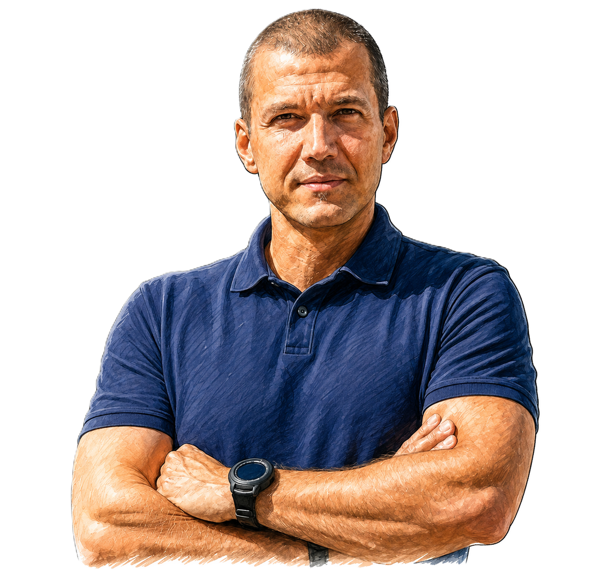
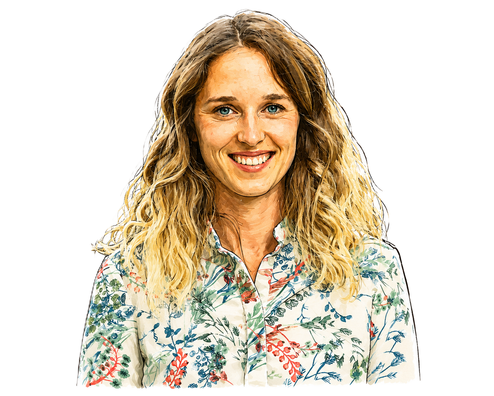
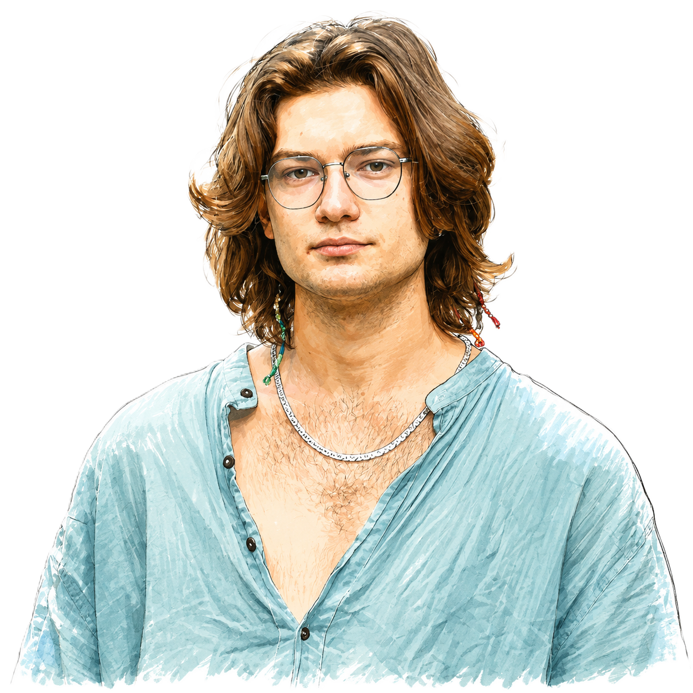
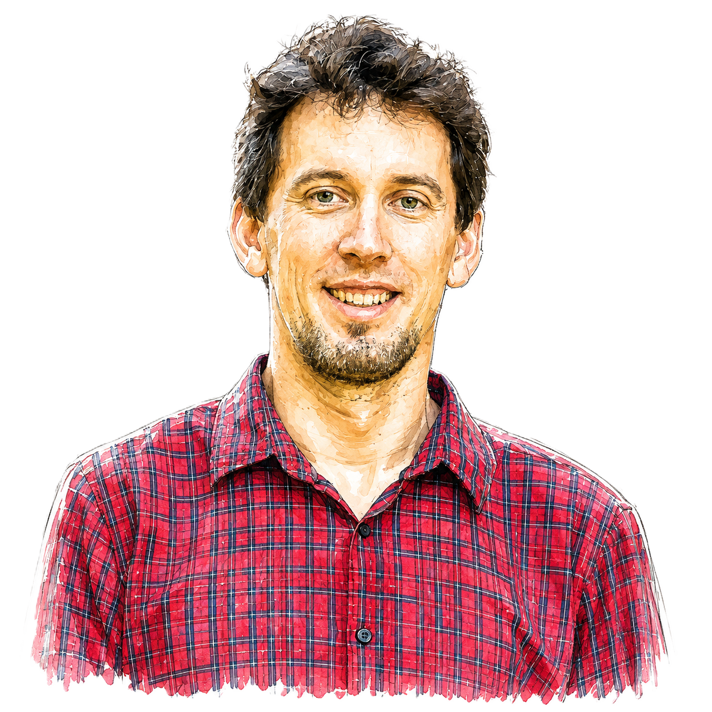
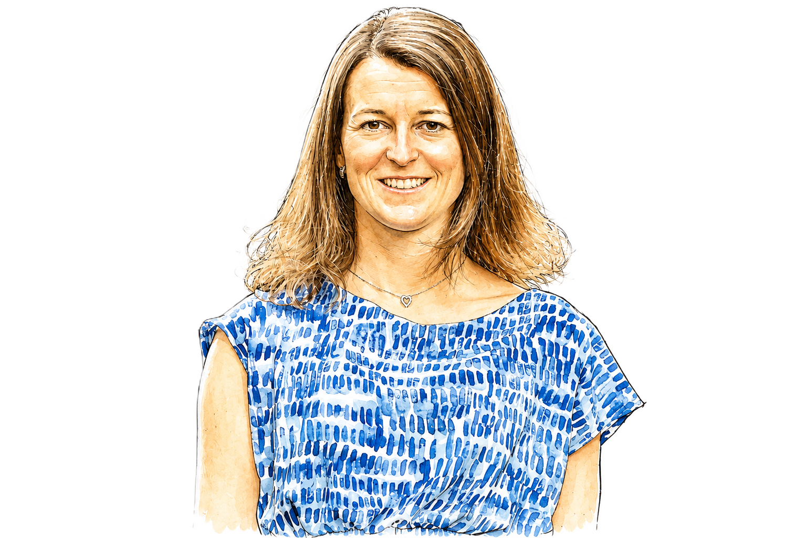
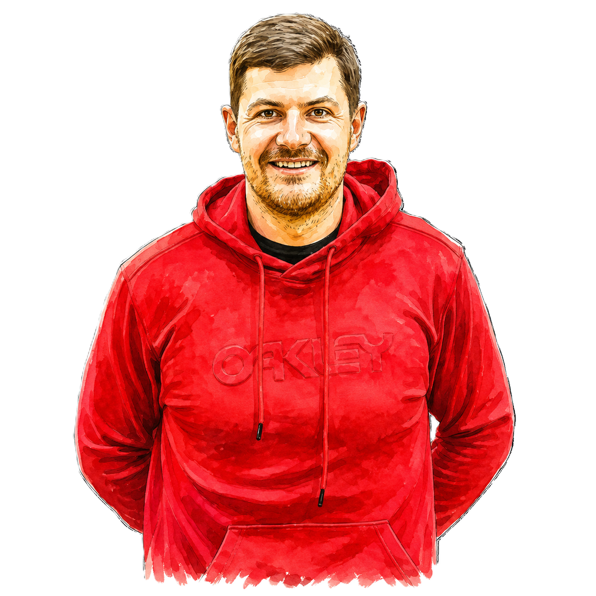

01

01 / Pohyb po městě
Bezpečně
pěšky městem.
Bezpečné přechody, chodníky a cesty, po kterých se člověk nemusí bát pustit dítě samotné.
Z:LOMNICE / VIZE PRO BUDOUCNOST
Jsme skupina lidí, kterým záleží na budoucnosti Lomnice. Přicházíme s novou energií, konkrétními nápady a chutí město posouvat dál. Chceme město, kde se bude dobře žít všem generacím.
↓ SCROLLUJTE DOLŮOsm oblastí, které chceme v Lomnici posouvat dopředu.
01 / Pohyb po městě
Bezpečné přechody, chodníky a cesty, po kterých se člověk nemusí bát pustit dítě samotné.

02 / Rozvoj
Chceme Lomnici, která se rozvíjí promyšleně a nabízí prostor pro mladé rodiny, seniory i nové obyvatele.

03 / Doprava
Investice do dopravy musí navazovat, dávat smysl a mít jasně vysvětlené priority.

04 / Veřejný prostor
Náměstí, parky, hřiště i menší místa v ulicích mají sloužit lidem, ne jen průjezdu aut.

05 / Energie
Chceme využívat energii efektivněji, snižovat provozní náklady města a připravovat se na budoucnost.

06 / Celá Lomnice
Rváčov, Dráčov, Černá, Skuhrov i další části Lomnice si zaslouží stejnou pozornost a kvalitní údržbu.

07 / Vzdělávání
Školy mají být moderním a bezpečným místem, které připravuje děti na svět, který teprve přijde.

08 / Radnice
Rozhodování města má být srozumitelné, dohledatelné a otevřené lidem, kterých se týká.
Různé zkušenosti, profese a pohledy. Jeden společný cíl — dělat Lomnici lepším místem pro život.

01 / NÁŠ TÝM
„Lomnice má obrovský potenciál. Chci pomoct tomu, aby ho dokázala využít.“
02 / NÁŠ TÝM
„Pravidla mají smysl, když jsou férová, srozumitelná a platí pro všechny.“
03 / NÁŠ TÝM
„Město žije tam, kde se lidé potkávají. Tvořme místa a příležitosti, která nás spojí.“

04 / NÁŠ TÝM
„O dobré město se musíme starat stejně jako o zdraví — pravidelně a s předstihem.“

05 / NÁŠ TÝM
„Budoucnost města začíná u lidí, kterým dáme prostor růst.“
06 / NÁŠ TÝM
„Mladí lidé nejsou budoucnost někdy potom. Jsou součástí Lomnice už dnes.“

07 / NÁŠ TÝM
„Nápady jsou začátek. Já chci hledat cestu, jak je proměnit ve skutečné výsledky.“

08 / NÁŠ TÝM
„Disciplína není brzda. Je to způsob, jak dotahovat důležité věci do konce.“

09 / NÁŠ TÝM
„Dobré město je takové, ve kterém má smysl vyrůstat, učit se i zůstávat.“

10 / NÁŠ TÝM
„Chci, aby mladí nemuseli z Lomnice odcházet, aby mohli něco dokázat.“
11 / NÁŠ TÝM
„Město má být místem, kde se myslí nejen na výkon, ale také na člověka.“

12 / NÁŠ TÝM
„Dobré rozhodnutí začíná tím, že známe cenu, kvalitu i to, co za ně skutečně dostaneme.“
13 / NÁŠ TÝM
„Silné město poznáme podle toho, jak se umí postarat o lidi, kteří potřebují pomoc.“
14 / NÁŠ TÝM
„Nápady mladých lidí nejsou doplněk. Jsou součástí toho, jak může Lomnice vypadat zítra.“

15 / NÁŠ TÝM
„Každé dítě si zaslouží dobrý start. A každé město dobré podmínky pro rodiny.“

16 / NÁŠ TÝM
„Když chceme lepší budoucnost, musíme ji začít stavět už ve škole.“
17 / NÁŠ TÝM
„Zkušenost má cenu tehdy, když ji dokážeme využít pro další generaci.“


11 / Kontakt
Chcete něco změnit, máte otázku nebo se chcete zapojit? Napište nám.
NAPIŠTE NÁM ↗